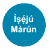
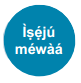
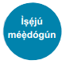
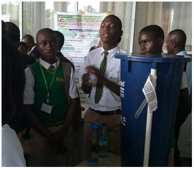
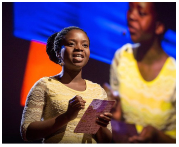
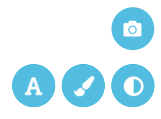

Gbogbo Ènìyàn Ni Ó Lè Jẹ́ Olùṣó-Ìlépa
Àwọn Àbájáde Ẹ̀ kọ
• Àwọn akẹ́kọ̀ọ́ yóò ní òye ohun tí ń sọni di Olùṣó-Ìlépa
fún àwọn SDGs.
• Àwọn akẹ́kọ̀ọ́ yóò mẹ́nubà àti ní òye àwọn ọgbọ́n ìṣe
àti ìmọ̀ tí wọ́n ti ní láti lè dásí àwọn SDGs
• Àwọn akẹ́kọ̀ọ́ yóò kọ́ láti f èrò wọn múlè
Ojú Ìwòye Tó Gbòòrò Si Lórí Sísé Àkọsílẹ̀ Ẹ̀ kọ
Ètò ẹ̀kọ́ yìí gbèrò láti jẹ́ kí àwọn akékọ̀ọ́ gbàgbó pé
olúkúlùkù ló ní agbára láti lè di Olùṣọ́-Ìlépa àti láti gbé
ìgbésẹ̀ fún SDGs (Àwọn Ìlépa Àgbáyé). Nípa níní óye
wípé oníkálukú ló yẹ kí ó darapọ̀ fún àṣeyọrí àwọn Ìlépa
yìí, àwọn akẹ̀kọ̀ọ́ yóò ṣ’èdámọ̀ wọn a sì tún mọ rírì
oríṣiríṣi ọgbọ́n ìṣe ẹnìkọ̀ọ̀kan wa àti ti ara wọn pẹ̀lú. Ètò
ẹ̀kọ́ yìí tọ́kasí àwọn àmúyẹ gbòógì ọdún 2018 tí OECD
Pisa Assessment Framework: Global Competence. Èyí
tí a yànyànná rẹ̀ wípé, “agbára láti sàyẹ̀wo ọ̀rọ̀ abélé,
àgbáyé àti ọ̀rọ̀ ẹlẹ́yàmẹ̀yà, láti ní òye àti ìmọrírì ojú ìwòye
elòmíràn, láti kópa nínú ìbáṣepọ̀ tí kò farasin, t’ótọ́ àti
tómúnádóko pẹ̀lú àwọn èèyàn-án onírúurú àṣà àti láti
gbé ìgbésẹ fún àlàfíà ati ìdàgbàsókè tó dúró ṣinṣin.”
http://www.oecd.org/pisa/pisa-2018-global-competence.html
Kayan Aiki
Àwọn Ohun Àmúlo
Ẹ̀ kọ́ yìí ṣe é ṣe pẹ̀lú tàbí laisi ẹ̀rọ ayélujára
Pẹ̀lú ayélujára:
kámẹ́rà tàbí kámẹ́rà ẹ̀rọ alágbèéká/
kọ̀mpútà/áípadì láti kò fọ́tò àwọn akékọ̀ọ́ sí ojú áàpù
(app) Goalkeeper Me.
Bí kò bá sí ayélujára: gègé ìkòwé, àwọn ọ̀dà, ohun èlò
fun àkójọpọ̀ iṣẹ́ àwòrán, dígí àti ìwé fún iṣẹ́ àwòrán
Olùṣọ́-Ìlépa (The Goalkeeper Portrait activity sheet).
Àkíyèsí fun àwọn Olùdánilẹ́kọ̀ ọ́
Ninu ẹ̀kọ́ yìí, àwọn akẹ́kọ̀ọ́ yóò ronú jinlẹ̀ lórí ọgbọ́n ìṣe, ìwà àbùdá ati ìmọ̀ won nípa yíya aworan Olùṣọ́-Ìlépa kan.
Àwọn akẹ́kọ̀ọ́ míràn lè má faramọ́ yíya fòtò ara wọn. Nípa bẹ́ẹ̀, a lè ní kí wọn ya àwòrán Olùṣọ́-Ìlépa ti ẹlẹgbẹ́ wọn tàbí ti
gbajúmọ̀ Olùṣọ́-Ìlépa àwọn SDGs.
Pe Ẹ̀ kọ́ yìí ní láti ṣe pèlú gbígbé fọ́tò/àwòrán di ori ẹ̀rọ ayélujára. Ríi dájú wípé ó wà ní ìbámu pẹ̀lú ìlànà ilé-ìwé rẹ àti ìlànà
ìdáàbòbò àti kí ọ ka àwọn Òfn àti Ipò ti ó ní orí áàpù Goalkeeper (Goalkeeper app):
http://cdn.worldslargestlesson.globalgoals.org/2018/06/goalkeeper-privacy1-1.pdf
Ìdúpẹ́
Pẹ̀ lú ọpẹ́ pàtàkì sí Chris Gadbury, Twitter: @chrisgadbury www.magicstorybooks.com,
Memory Banda: https://memorybanda.blogspot.com/
Ndubuisi Uchea & Hayel Wartemberg: https://wordonthecurb.co.uk/
Odeogbola Ayodele, Adeeko Olalekan: Abeokuta Grammar School, Abeokuta ati Baptist Boys’ high School Abeokuta
(mejeeji ni Nigeria)
Ìránnilétí Ìmò Àtẹ̀yìnwá
Àkíyèsí: Ẹ̀ kọ́ yìí gbàgbọ́ pe àwọn akẹ́kọ̀ ọ́ ní ìmọ̀ nípa àwọn SDGs. Atọka ìtàkùn àgbáyé fún ìwo-àràa
Ẹ̀ kọ́ Àgbáyé T’ótóbi Jùlo (World’s Largest Lesson) Apá Kínní tí ó ṣe àgbékalẹ̀ àwọn Ìlépa náà fún àwọn
akẹ́kọ̀ ọ́ wà ní http://worldslargestlesson.globalgoals.org/resources-for-teaching-the-sdgs-in-nigeria/
Bèèrè àwọn ìbéèrè wọnyí fún àtúnyẹ̀ wò ìmọ́ àwọn akẹ́kọ̀ ọ́ lóríi àwọn SDGs. Èyí ṣe é ṣe bíi iṣé Àdárò,
Ìdarapọ̀ Pẹ̀ lú Ẹlòmíràn, Alábàápín, tàbí ti Gbogbo Kíláàsí. Kíni àwọn ohun tí àwọn SDGs yìí fẹ́ jẹ́ kó di mímú ṣe?
Kíni ìdí tí wọ́ n f ṣe pàtàkì? Àwọn Ìlépa méèló ni ó wà níbẹ̀ ?
Ìgbésẹ̀ Kejì: Ṣíṣe Ìdánimọ̀ Àwọn tó ń Ran Àwọn Ìlépa Tó Dúró Ṣinṣin Lọ́wọ
Bèèrè ìbéèrè yìí lọ́wọ́ àwọn akẹ́kọ̀ọ́: Ojúṣe tani ìṣàṣeyọrí àwọn SDGs?
Àwọn Àbá Tí Ọ lè Jẹyọ: Àwọn Ìjọba, Àwọn Àjọ Tí Kìí Ṣe Ti Ìjọba/Àwọn Àjọ Onínúure, Àjọ UN, àwọn okòwò, àwọn ọmọdé,
àwọn àgbàlagbà – GBOGBO ÈNÌYÀN!
Bèèrè ìbéèrè tí ó tẹ̀le yìí: Ṣé àwọn ọ̀ dọ́ mọdé ní ojúṣe láti ríi wípé àwon SDGs di mímú ṣe? Ṣe àwọn odomode lè mú ìyàtò
bá àwọn SDGs?
Jíròrò lórí àwọn oríṣiríṣi ìdáhùn ati àbá kí ọ sí tún ṣàlàyé wípé láti ọjọ́ orí t’ókéré ní àwọn ọmọdé àti ọ̀ dómọdé lè ti kó
ipa tó yanrantí lórí àwọn Ìlépa. Wo apá Kejì ìwò-àrà Ẹ̀ kọ́ T’ótóbi Jùlọ L’ágbàáyé (the World’s Largest Lesson Part 2
animation) ní orí (http://
worldslargestlesson.globalgoals.org/resources-for-teaching-the-sdgs-in-nigeria/) láti rí àpẹẹrẹ
àwọn ọ̀ dómọdé lásán tí wọ́n gbé ìgbésẹ fún àwọn Ìlépa. Òtún lè f àwọn àpẹẹrẹ han àwọn akẹ́kọ̀ ọ́ láti orí maapu
ìbáṣepọ̀ ti Ẹ̀ kọ́ T’ótóbi Jùlọ L’ágbàáyé (World’s Largest Lesson
interactive map) kí ọ sì wo àwọn ìgbésẹ tí àwọn
ọ̀ dọ́mọdé yòókù gbé fún àwọn SDGs.
Ṣàlàyé wípé a lè pe àwọn èèyàn wọ̀nyí ni Àwọn Olùṣọ-Ilepa nítorí wípé wọn dúró fún àwọn SDGs wọ́n sì tún gbé ìgbésẹ
fún un. Èèyàn lásán náà ni wọ́n tí wọ́n fẹ́ kí ilé-ìwé, ilé, agbègbè àti orílẹ̀-èdè wọn dárasi fún gbogbo ènìyàn láti gbé níìsi
yìí wọ́n sì tún ṣaláàbòo rẹ̀ fún ọjọ́ iwájú. Wọ́n ń f àwọn Ìlépa náà ṣe ọ̀nà tí ó ń tọ́ka sí ìgbésẹ wọn sí ètò Ìdàgbàsókè Tó
Dúró Ṣinṣin kan láti ríi wípé a ní ayé òdodo àti àìṣe-ojúṣàájú.
Àwọn akékòó lè kà si lórí àwọn ọ̀dọ́ Olùṣọ́-Ìlépa míràn káàkiri àgbáyé ní Atọ́kasí kínní Appendix 1-4
Ìgbésẹ̀ Kẹta: Ṣíṣe Àsopọ̀ Àwọn Ọgbọ́n Ìṣe Àwọn Èèyàn Fún Ìlépa
Àkíyèsí: Ní iṣẹ́ ṣíṣe tí ó wà lábẹ́ yii, a kò ní ìdáhùn t’ótọ́ tàbí tí kòtọ́ . A ṣe iṣẹ́ ṣíṣe náà láti lè dá ìjíròrò sílẹ̀ láàárín
àwọn akẹ́kọ̀ ọ́ nípa bíbèrè àwọn ìbéèrè tí yóò pe àwọn akẹ́ kọ̀ ọ́ níjà láti lè f ẹsun àwọn àbá ati èrò wọn múlẹ
Kàá síta/ṣe àfhàn àkọsílẹ ọ̀rọ̀ láti ẹnu Olùṣọ́-ìlépa Memory Banda (wo Appendix 3 láti mọ̀ si nípa iṣẹ́ àwàkọhà
Memory lórí mímú Ìlépa kàrún (Goal 5) ṣẹ.
“kò sí agbára tó ga jù lọ fún ènìyàn láti di Olùṣọ-Ìlépa. Gbogbo wa ni a lè di Olùṣọ́ -Ìlépa nipa yíyan èyíkéyìí nínú àwọn
SDGs yìí kí ọ sì bẹ̀ rẹ̀ sí làkàkà fún ìtẹ̀ síwájú.”
Jíròrò lórí àkọsílẹ̀ yìí nínú kílàsì - ǹ jẹ́ àwọn akẹ́ kọ̀ ọ́ gbàgbọ́? Ṣàlàyé pé gbogbo wa ni a ní oríṣiríṣi ọgbọ́n ìṣe àti ìmọ̀ láti
lè ríi wípé àwọn Ìlépa yìí di mímúṣe. Bí àwọn akẹ́kọ̀ọ́ báṣe lo àwọn ọgbọ́n ìṣe àti ìmọ̀ wọn yìí ni ó ṣe pàtàkìt. Bí Olùṣọ́-
Ìlépa kan bá pinnu láti dìde láti gbé ìgbésẹ - bí ó tilẹ̀ rí àwọn ìfàsẹ́yìn ati ìjákulẹ̀, kí ó ní ìrètí, ṣe ọkàn akin, kí ó sì pinnu
wípé Ìlépa náà yóò di mímú ṣẹ.
Fi ìwé-iṣẹ́ẹ ‘Ṣíṣe Àsopọ̀ Láàárín Àwọn SDGs’ han (Appendix 5). Iṣẹ́ ṣíṣe yìí wà láti ran àwọn akẹ́kọ̀ọ́ lọ́wọ́ láti mọ irúu
ọgbọ́n ìṣe yi en nípò láti ṣe àmúṣẹ àwọn Ìlépa kọ̀ọ̀kan. Ṣàfhàn àwọn ọ̀rọ̀ mẹ́ẹ̀dógún tí a dáládàá tí a kọ ni aláwọ̀ ewé ni
Atọ́kasí Keta Appendix 6 (o lè ṣàtúnṣe àwọn àkójọ yìí fún ilé-ìwé rẹ) Mú ọ̀rọ̀ kan láti bẹ̀rẹ̀ b.a. alátinúdá. Kọ èyí sí inú
àwòrán onígun mẹ́rin àkọ́kọ́ tí ó wà láàárín ìwé iṣẹ́ ṣíṣe
.
Bèèrè lọ́wọ́ àwọn akẹ́kọ̀ọ́- Bawo ni ìṣe àtinúdá má ṣee kópa nínú àwọn Ìlépa yìí? Àwọn Ìlépa wo ni yóò nípa lé lórí jùlọ?
Gba àwọn akẹ́kọ̀ọ́ níyànjú láti f àwọn àbá ati ìdáhùn wọn múlẹ̀. Gba àwọn àbá díẹ̀ lọ́wọ́ àwọn akẹ́kọ̀ọ́ kí o sì so àtinúdá
mọ́ Ìlépa tí wọ́n yàn nípa fífa ilà láti ọ̀rọ̀ náà sí Ìlépa tí ó yẹ.
Àwọn akẹ́kọ̀ọ́ le parí iṣẹ́ ṣíṣe yókù nípa mímú àwọn ọgbọ́n ìṣe tí ó wà ní (Appendix 6) tí wọ́n ròpé á ṣe pàtàki jùlọ sí
ìmúṣẹ àwọn Ìlépa. Kí wọ́n sì so àwọn ọgbọ́n ìṣe yii mó àwọn Ìlépa tí wọ́n rò pé yóò ṣe e lóore jùlọ.
Láàárín gbogbo iṣẹ́ ṣíṣe yìí, dá àwọn akẹ́kọ̀ọ́ dúró láti bèrè irú ìṣe wo ni wọ́n rí gẹ́gẹ́ bí èyí tó ṣe pàtàkì jùlọ. Jẹ́kí àwọn
akẹ́kọ̀ọ́ ṣalábàápín àwọn àbá wọn lórí ìdí tí wọ́n f yan ọgbọ́n ìṣe kan fún Ìlépa kan.
Àkíyèsi: Kòsí ìdáhùn t’ótọ́ tàbí tí kòtọ́. Ìdáhùn wọn dúró lóri bí wọ́n ba fẹ́. Àwọn ọgbọ́n ìṣe míràn lè jẹ mọ́ gbogbo àwọn
Ìlépa.
Ìpèníjà: Bèèrè lọ́wọ́ àwọn akẹ́kọ̀ọ́ ìdí tí ó ṣe ṣe pàtàkì kí oríṣiríṣi àwọn ènìyàn pẹ̀ lú oríṣiríṣi ọgbọ́ n ìṣe, ẹ̀ bùn, ìmọ̀ àti ìfẹ́
ran ìmúṣẹ àwon Ìlépa wọ̀ nyí lọ́ wọ́? Nítorí wípé àwon ìṣòro tí àwọn ènìyàn ǹ kojú tóbi ó sì jẹ́ ojírúurú. Ní ọ̀pọ̀lọpọ̀ ìgbà,
kòsí ìdáhùn tàbí ọ̀nà àbáyọ kan sí wọn.
Step 4: Realising Individual Potential
Ìgbésẹ̀ tí ó kàn ni kí àwọn akẹ́kọ̀ ọ́ mọ ọgbọ́n ìṣe tójẹ́ ti wọn. Pe àwọn akẹ́kọ̀ ọ́ kí wọ́n f ìgbà díẹ̀ ronú
jinlẹ̀ lóró àwọn ìdáhùn wọn sí àwọn ìbíèrè wònyí. Wọ́ n le fẹ́ gbìmọ̀ pẹ̀ lú alájọrò kan fún àfkún àwọn àbá.
1. Kíni ohun tí ó ṣe pàtàkì nípa à rẹ tí ó jẹ́ kí o yàtọ̀ ?
2. Kíni ohun náà nípa à rẹ tí ó f jẹ́ kí o ní ipá/agbára láti di Olùṣọ́ -Ìlépa?
3. Kíni àwọn ọgbọ́ n ìṣe tàbí ìṣesí tí o ti ní tí o lè mú gbòòrò síi láti di Oùṣọ́ -Ìlépa?
4. Irú èèyàn wo lo fẹ́ jẹ́ bí o bá dàgbà?
Rọ àwọn akẹ́kọ̀ ọ́ nìyànjú láti ronú jinlẹ̀ kí wọ́n sì mú iyekíye ọ̀ rọ̀ tí wọ́n bá fẹ́ . Ó ṣe pàtàkì láti tẹnu mọ́ o fun àwọn
wípé kí wọ́n ṣe yan àwọn ọ̀ rọ̀ tí ó ṣe àpèjúwe ìrínisí ṣùgbọ̀ n àwọn ọ̀ rọ̀ tí ó júwe ìṣesí, ọgbọ́n ìṣe àti ìmọ̀ . Fún àbá, o lè
yẹ àwọn ọ̀ rọ̀ tí a kọ sí Appendix 6.
Ìgbésẹ̀ Karùn-ún: Yíya Àwòràn Olùṣọ́-Ìlépa
Fí àápú Olùṣọ́-Ìlépa (Goalkeeper Me app) han. Ṣàlàyé pé àwọn akẹ́kọ̀ọ́ ní láti mú ọ̀rọ̀ mẹ́ta tí wọ́n gbàgbọ́ pé yóò ràn
wọ́n lọ́wọ́ bí wọ́n ṣe gbé ìgbésẹ̀ fún àwọn SDGs. Lo àǹfàní yìí láti ṣàlàyé pé gbogbo rẹ̀ dá lórí gbígbà wípé gbogbo wa
yàtọ̀ sírawa ati wípé ìfẹ́ wọn ati ìfojúsùn wọn ni a ní lò fún ìmúṣẹ àwọn SDGs. Ọ lè f àpẹẹrẹ àwọn àwòrán Olùṣọ́-Ìlépa
hàn wọn ní: http://perfectdaylondon.com/projects/goalkeepers/
Àwọn akẹ́kọ̀ọ́ gbe fọ́tò wọn sí orí ìtàkùn áàpù Olùṣọ́-Ìlépa (the Goalkeeper app website). Wọ́n lè ṣe àwòrán wọn bó ṣe
wùn wọ́n pẹ̀lú àwọ̀ àti àwọn ọ̀rọ̀. (Wo Appendix 7 fun ìtọ́nisọ́nà lẹ́ẹ̀kún rẹ́rẹ́).
Jẹ́kí àwọn akẹ́kọ̀ọ́ ronú jinlẹ̀ lórí àwọn ọ̀nà tí wọ́n lè gbà lo àwòrán Olùṣọ́-ìlépa wọn láti ran àwọn èèyàn lọ́wọ́ sí láti
mọ̀ nipa àwọn SDGs. Ṣe àfhàn àwọn àpẹẹrẹ bí a ṣe ṣàgbéjáde àwọn Olùṣọ́-ìlépa àtẹ̀yìnwá ni New York ní ọdún 2017.
Ǹjẹ́ àwọn akẹ́ kọ̀ ọ́ lè ṣe ìpolongo Olùṣọ-Ìlépa ti won?
Ìdàkejì: Bí kò bá sí kámẹ́rà, pèsè dígí kí o sì pe àwọn akẹ́kọ̀ọ́ láti yà/kùn tàbí ṣàkójọpọ̀ àwọn àwòrán ara wọn.. Àwọn
akẹ́kọ̀ọ́ lè lo àwòrán yìí ati àwọn ọ̀rọ̀ mẹ́ta tí wọ́n Yàn láti ṣe àwòrán Olùṣọ́-ìlépa. (Wo àwòṣe àwòrán Olùṣọ́-ìlépa
ni Appendix 8). A lè ṣàfhàn àwọn àwòrán Olùṣọ́-Ìlépa yìí nínú kílàsì tabi ilé-ìwé. . Jẹ́kí àwọn ọmọ ilé-ìwé sọ àwọn
ibòmíràn ti a lè ti ṣàfhàn àwọn àwòrán yìí. Ibo ni wọ́ n lè tí ṣàfhàn àwọn àwòrán Olùṣọ́ -Ìlépa wọn ki àwọn ènìyàn lè bá
mọ̀ nipa awọn SDGs?
Ìgbésẹ̀ Kẹfa: O Ti Ṣetán Báyìí – Gbé Ìgbésẹ̀
Níwọ̀nba ìgbà tí àwọn akẹ́kọ̀ọ́ ti ṣe ìdámọ̀ àwọn ọgbọ́n ìṣe àti ìmọ̀ tí wọ́n ní láti di Olùṣọ́-ìlépa, wọ́n ti
ṣetán láti gbé ìgbésẹ̀ fún àwọn SDGs! Béèrè àwọn ìbéèrè wọ̀nyí lè àwọn akẹ́kọ̀ọ́ fún ìjíròrò gẹ́gẹ́ bíi ìsọ̀rí kan:
• Àwọn ìgbésẹ̀ wo lo lè bẹ̀ rẹ̀ sí gbé lónìí?
• Kílẹ fẹ́ṣe fún àwọn Ìlépa gẹ́gẹ́ bíi ìsọ̀ rí?
• Kíni àwọn ìbéèrè tí a ní fún àwọn Ìlépa?
Wo apá keta Ẹ̀kọ́ T’ótóbi Jùlọ L’àgbàáyé ni http://worldslargestlesson.globalgoals.org/resources-for-teaching-the-sdgsin-nigeria/ fún ìmísí lórí bí o ó bẹrẹ̀ lónìí!
Jọ̀ wọ́ ṣalábàápín àwòrán Olùṣọ́-Ìlépa rẹ pẹ̀ lú wa! Darapọ̀ pẹ̀ lú àwọn ẹgbẹgbẹ̀ rún ọ̀ dómọdé Olùṣọ́-Ìlépa míràn
nípa ff ẹ̀ kọ́ rẹ̀ ẹ sí orí máàpù ìbáṣepọ̀ (our interactive map). o tún lè báwa sọ̀ rọ̀ lórí twitter ni @WorldsLessonNG,
Facebook @WorldsLessonNG, Instagram @WorldsLessonNG or tàbí fìwé ránṣẹ́ sí worldslessonnigeria@outlook.com
Àfkún Iṣẹ́ Ṣíṣe:
• Fi Student Action tab han àwọn akẹ́ kọ̀ ọ́ lórí ìtàkùn
àgbáyé Ẹ̀ kọ́ T’ótóbi Júlo L’ágbàáyé (the World’s Largest
Lesson website) http://worldslargestlesson.globalgoals.org/ fún ìmísí lórí bí a ṣe lè gbé ìgbéṣẹ̀ fún SDGs.
• Dá Iṣẹ́ Ìṣakitiyan Fún Agbègbè sílẹ̀ láti mú
àyípadà báa: http://worldslargestlesson.globalgoals.org/student-led-change-projects/
• Wo fídíò kékeré yìí https://vimeo.com/268764152,) lóri
àwọn gbajúgbajù àtijọ́ . Bi àwọn akẹkọ̀ ọ́ ní àwọn ìbèèrè
wọ̀ nyí: Bí àwọn ènìyàn tó wá nínú fídíò báṣì wà láyé,
ṣe wọn yòó jẹ́ Olùṣọ́ -Ìlépa? Ìlépa wo ní o ròpé wọn yòó
jà ftafta fún? Kíni ó jámọ́ fún àwọn ènìyàn yìí láti jẹ́
Olùṣọ́ -Ìlépa? Irú ìwà ìṣesí wo ni wọ́ n ní láti lè ṣàwọn
àṣeyọrí mánigbàgbé yìí? Èyí lè jẹ́ gẹ́ gẹ́ bí iṣẹ́ àmúrelé
tàbí jẹ́ ara ìbẹ̀ ẹ̀ rẹ̀ iṣẹ́ ìtàn nípa àwọn gbajúmọ̀ nínú ìtàn.
• Ní kí àwọn akẹ́ kọ̀ ọ́ ṣe ìwádìí lórí àwọn ẹlòmíràn ní
orílè-èdè wọn tí wọ́ n rò pé a lè pèní Olùṣọ̀ -Ìlépa. Ní
kí àwọn akẹ́ kọ̀ ọ́ kọ àkọsílẹ̀ ráńpẹ́ tí ó ṣàlàyé ìdí tí
wọ́ n f rò wípé ó yẹ kí wọ́ n jẹ́ Olùṣọ́ -Ìlépa. Ẹ̀ kọ́ wo
ní àwọn akẹ́ kọ̀ ọ́ lè kọ́ lára àwọn ènìyàn yí Ṣé a lè
pè wọ́ n kí wọ́ n wá bá àwọn ọmọ ilé-ìwé sọrọ tàbí kí
wọ́ n wa gba àwọn akẹ́ kọ̀ ọ́ níyànjú láti gbé ìgbésẹ̀ ?
• Ẹnikẹ́ ni ló lè ya àwòrán Olùṣọ́ -Ìlépa! Gba àwọn
akẹ́ kọ̀ ọ́ níyànjú láti ṣe alábàápín èyí pẹ̀ lú àwọn
òbí, ẹbí tàbí ọ̀ rẹ́ láti polongo à SDGs.
• Ní kí àwọn akẹ́ kọ̀ ọ́ ṣe ìwádìí lórí ayẹyẹ ọlọ́ dọdún
àwọn Olùṣọ́ -Ìlépa lórí (https://www.globalgoals.org/goalkeepers). Àwọn wo ní àlejò àti olùkópa
àtẹ̀ yìnwá? Ìgbésẹ̀ ni wọ́ n gbé tí àwọn Ìlépa
yìí fdi mímúṣẹ? Kíni ìdí tí àwọn ètò ayẹyẹ
bàyìí ṣeṣe pàtàkì fún ìmúṣẹ àwọn SDGs?
Appendix 1: Àwọn Àpẹẹrẹ Ọ̀ dọ̀ Olùṣọ́ -Ìlépa Káàkiri Àgbáyé

Olude Marvelous, Ernest Ogunyemi,
àti Amao David – Nàìjíríà
Egbẹ́ Aqua jẹ́ ẹgbẹ́ àwọn ọ̀dọ́mọkùnrin mẹ́ta— Olude Marvelous, Ernest Ogunyemi, àti Amao David— tí wọ́n ṣe àgbékalẹ̀ ìpèsè omi aláìlábàwọ́n tiwa-ntiwa fún agbègbè wọn nípa lílo eerùpẹ̀ Iṣẹ́ asẹ́ omi aláìlábàwọ́n tiwa-n-tiwa yìí ti wọ́n ṣe àgbékalẹ̀ rẹ̀ jẹ́ iṣẹ́ tí ó lo àwọn ohun èlò tí ó wà ní àyíká. Èyí túmọ̀ sí wípé iṣẹ́ olówó pọ́kú ni, wọ́n sì ti ń lòó ní ilé-ìwé wọn àti ọ̀pọ̀lọpọ̀ àwọn ilé ní agbègbè wọ́n.
1. Kíni ó jẹ́ ìwúrí/ìmísí fún ẹ láti gbé ìgbésẹ̀ fún àwọn SDGs?
Ju gbogbo rẹ̀ lọ, àyíká wa ni. Gbígbé ní agbègbè tí ìmọ́tótó jẹ́ èrò ọkàn tàbí àlá lásán, ìlú tí
àwọn tí ó ní omi tó mọ́ kò pọ̀ tó àwọn tí ó ń lo ẹ̀ rọ ìbánisọ̀ rọ̀ alágbèéká. Ní àfkún, kò sí ẹnití o
bìkítà, kìí sì ṣe wípé wọn kò fẹ́, ṣùgbọ́n wọn kò ní agbára. Fún ìdí èyí, ohun tí a lè rò ni bí a ṣe
lè mú àyípadà wá, àyípadà tí ó túmọ̀ sí wípé àwọn ebí yóò ní omi mímu pẹ̀ lú ìgbé àlàáfíà.
2. Kíni ó jẹ́ ìwúrí ìtèsíwájú ù rẹ?
Ohun tí ó jẹ́ ìwúrí àkọ́kọ́ fún wa ni ìrànlọ́wọ́ tí atí gbà láti ọwọ́ Beyond School Community Challenge,
ètò the Mandela Washington Fellows Alumni ní Nàìjíríà, níbití àwọn adájọ́ àti ọ̀ pọ̀ lọpọ̀ ènìyàn ṣe
onígbọ̀ wọ́ iṣẹ́ wa nípa fífún wa ní ẹ̀ bùn owó, ṣ’alábàápín ìrírí wọn, tí wọ́n sì tún sọ fún wa bí a ṣe lè mú
iṣẹ́ wa gbèrú si. Èyí ni ìbẹ̀ rẹ̀ ìwúrí wa. Ṣùgbọ́n, ipa ojojúmọ́ tí iṣẹ́ wa ń kó (bí ó ti lè kéré) láwùjọ àti iye
ọ̀ dómọdé tí ó ń tẹ̀ síwájú bí tiwa ni ó jẹ́ olórí ìwúrí. Iṣẹ́ àkọ́kọ́ọ wa tí ó jẹ́ pípèsè iná-ọba láti inú afẹ́ fẹ́ àwọn
ẹ̀ gbin fún lílò ní yàrá iṣẹ́ ìmọ̀ -ìjìnlẹ̀ tún ṣe ìwúrí fún wa láti ṣíṣe lórí asẹ́ omi aláìlábàwọ́n tiwa-n-tiwa.
3. Kín ni ìdí tí o f lérò pé àwon ọ̀ dómodé se pàtàkì fún ìmúsẹ àwon SDGs?
Ìdáhùn wa ni ‘Kin ni ìdí tí kò yẹ kó fí ríbẹ̀ ?’. Láti ìgbà tí mo ti pàdé ọ̀ pọ̀ lọpọ̀ àwọn ọ̀ dọ́ mọdẹ́
jákèjádò Nàìjíríà àti káàkiri àgbáyé ti wọ́ n ṣe ìrànwọ́ kí ayé ṣe é gbé, à á ma a wòye irú àrà tí
wọ́ n lè dá olú àwọn Ìlépa. Àwọn ọ̀ dọ́ mọdé ní agbára àrà ọtọ tí ó ń fún wọn ní ìpinnu láti sàṣeyọrí
ninu ohunkóhun tí wọ́n f ọkàn wọn sí bíótilẹ̀ jẹ́ wípé ìdojúkọ àti ìkọsẹ̀ lè wà ní ọ̀ nà wọn. Ní afkun,
àwọn ọ̀ dọ́mọdé bílíọ̀ nù méjì jẹ́ ohun èlò tó lágbára. Wípé a pọ̀ báyìí túmọ̀ a ṣe pàtàkì nínú àwọn
ohun tí ó ń ṣẹlẹ̀ ní ayé yìí. Àwọn ọ̀ dọ̀ tún ṣe pàtàkì nítorí wípé àwọn Ìlépa SDGs yìí jẹ́ ti wọn.
Àwọn ọ̀ dọ́ ló nílò Ètò Ẹ̀ kọ́ tó Múnádóko. Àwọn ọ̀ dọ́ ni yóò ṣe ẹlẹ́rìí bí a bá ṣe ṣe ayé yìí.
4. Ìtumọ̀ wo ni jíjẹ́ Olùṣọ́ -Ìlépa ní sí ọ?
Jíjẹ́ Olùṣọ́-ìlépa jẹ́ gbígbé ojojúmọ́ ayé ní ọ̀ nà tí ó kó ipa dáradára ní agbègbè wa. Ó jẹ́ ìdùnnú tí
a ní wípé ẹnìkan níbìkan nínú àbò. Ó túmọ̀ sí wípé a kò pàdánù àwọn ọmọkùnrin tàbí ọmọbìnrin
sí orísirísi àrùn inú omi ti ó ti ṣe ikú pa ọjọ́ iwájú ilẹ̀ Áfríkà àti àwọn ibòmíràn l’ágbàáyé.
Appendix 2: Àwọn Àpẹẹrẹ Ọ̀ dọ̀ Olùṣọ́ -Ìlépa Káàkiri Àgbáyé

Comfort Ijaola, Victor Aromose àti Alfred, Adeyemi láti Nàìjíríà
Comfort, Victor àti Alfred kẹ́ akẹ́kọ̀ọ́ ìpele kọkànlá àti ìkẹjọ ní ilé-ìwé tí ó gbajúmọ̀ ní gúúsù Nàìjíríà tí wọ́n sì ń gba ọ̀nà àrà kojú ìwà ìbàjẹ́ ìfpá bánilòpọ̀ ni orílè-èdè Nàìjíríà. Bí ìwà ìbàjẹ́ yìí se ń gbèrú si ní agbègbè wọn ni ó mú kí àwọn akẹ́kọ̀ọ́ yìí gbé ìgbésẹ tí ó dúró ṣinṣin ní ilé ẹ̀kọ́ àgbà. Àwọn akẹ́kọ̀ọ́ yìí ṣíṣe papọ̀ láti dá Just Nig Project sílẹ̀. Iṣẹ́ yìí ni àkọ́kọ́ irú rẹ̀ tí ó f jẹ́kí Nàìjíríà kópa nínú Global Diamond Challenge ni ìpele tí ó kẹ́yìn ní ọdún 2019.
1. Kíni ó jẹ́ ìwúrí/ìmísí fún ẹ láti gbé ìgbésẹ̀ fún àwọn SDGs?
Gẹ́gẹ́ bí ẹgbẹ́ a ri wípé àwọn ọ̀dọ́bìnrin ní Nàìjíríà ní àwọn ìdojúkọ tí ó ọ pàápàá jùlọ ìfpá
bánilòpọ̀. A ri wípé ìṣòro yìí ń gbèrú si lójoojúmọ́ gẹ́gẹ́ bí èèkádẹ̀rí. Ìrírí ti ara wa àti ẹ̀ri àwọn
ènìyàn gbé wa ninu láti gbé ìgbésẹ fún Ìlépa Kàrún— Ìbádg a Láàrin Ọkùnrin àti Obìnrin.
2. Kíni ó jẹ́ ìwúrí ìtèsíwájú ù rẹ?
Ìmọ̀ ẹ̀rọ ló ń ṣe ìrànlọ́wọ́ fún wa lórí ìṣàṣeyọrí Ìlépa wa. Ó mú wa tẹ̀síwájú láti ìbẹ̀rẹ̀ wa.
Ìtara tí a ní sí èròngbà/ìlépa yìí tún mú wa tẹ̀síwájú. Lílo ẹ̀rọ ayélujára jẹ́kí a ní anfààní láti
kó ipa tó péye láyé àwọn ènìyàn káàkiri àgbáyé. Àpẹẹrẹ èyí ni ìtàkùn àgbáyé tí a dá sílẹ, tí
ó ń mú Ìlépa yìí ṣẹ. Àwọn èsì dáradára tí à ń rí gbà tún fún wa ní ìwúrí láti tèsíwájú.
3. Kín ni ìdí tí o f lérò pé àwon ọ̀ dómodé se pàtàkì fún ìmúsẹ àwon SDGs?
Àwọn ọ̀dọ́ pọ̀ jántìrẹrẹ ní àgbáyé ní àsìkò yìí. Èyí f yé wa wípé bí àwọn ọ̀dọ́ bá ọ
ní iṣé ìtara báyìí, àwùjọ wa yóò dàgbà sókè. Ní òtítọ́, ṣíṣe àmúṣẹ irú àwọn Ìlépa
bayii yẹ kí ó rú àwọn ọ̀dọ́ sókè nítorí wípé ìtara Jésù ìṣesí àwọn ọ̀dọ́.
4. Ìtumọ̀ wo ni jíjẹ́ Olùṣọ́ -Ìlépa ní sí ọ?
Jíjẹ́ Olùṣọ́-ìlépa máa ń jẹ́ kí a mọ si nípa àwùjọ wa. Ó ń jẹ́ kí a ran agbègbè wa lọ́wọ́, a sì tún ní
anfààní láti ṣiṣẹ́ papọ̀ pẹ̀lú àwọn tí afìwàjọ láti lè mú àwọn ìlépa wọ̀nyí ṣẹ lẹ́kùnrẹ́rẹ́. Àpẹẹrẹ èyí ni
ìbáṣepọ̀ wa ní Just Nig pẹ̀lú Saviours tí wọ́n jẹ́ bíi Olùdámọ̀ràn, Ajàjàgbara, Olùwòsàn àti Oníròyìn.
Appendix 3: Àwọn Àpẹẹrẹ Ọ̀ dọ̀ Olùṣọ́ -Ìlépa Káàkiri Àgbáyé

Memory Banda láti Màláwì
Memory jẹ́ agbẹnusọ takuntakun tí ó
ń dẹ́kun ìfọmọdé lọ́kọ. Memory kọ̀ láti
lọ́kọ lọ́mọde. Kàkà bẹ́ ẹ̀ , ó bá àwọn olóyè
abúlé rẹ̀ ṣiṣẹ́ láti ṣ’òfn tó ń dáàbòbò
àwọn ọmọdébìrin lọ́wọ́ fíf lọ́kọ. Iṣẹ́
rẹ̀ ti jẹ́ k’àwọn aláṣẹ sún ọjọ́ ori fún
ìflọ́kọ sókè sí odún méjìdínlógún.
Láti kà si nípa iṣẹ́ Memory tẹ here.
1. Kíni ó jẹ́ ìwúrí/ìmísí fún ẹ láti gbé ìgbésẹ̀ fún àwọn SDGs?
Dídàgbà ní ọ̀ kan nínú àwọn ìlú t’ótòṣì jùlọ kìí ṣe
ohun to ròrùn rárá, pàápàá júlọ gẹ́ gẹ́ bi ọmọbìrin. A
dàgbà láìní agbára láti yàn; àwọn àǹfàní ìgbé ayé
kò sìsí níbẹ̀ . Ó bani nínú jẹ́ wípé àwọn ènìyàn dàgbà láìmọ̀ wípé àwọn ní ẹ̀ tọ́ ọmọ ènìyàn tí ó ṣe é dáàdòbò. Ohun
tí ó dinu jú ni kí n rí àwọn ẹlẹgbẹ́ míi l’óbìrin kí wọ́n má le sọ̀ rọ̀ tí abá gbojú ẹ̀ tọ́ wọnmọ́ lẹ̀ tàbí tí wọ́n bá ń ní ìdojúkọ.
Ẹ̀ kọ́ jẹ́ ọ̀ kan lára àwọn ẹ̀ tọ́ ọmọ-ènìyàn tí ó ṣe pàtàkì, sùgbọ́ n ọ̀ pọ̀ àwọn ọmọbìrin ni kò ní èyí. Nígbàtí morí bí wọ́ n
ti ń f’ọmọdé lọ́kọ nínú ẹbí mí, láàárín àwọn ọ̀ rẹ́ nì ati nínú àwùjọ mi; mo pinnu láti jà fún wọn. Ìgbéyàwó ọmọdé jẹ́
ọ̀ kan lára àwọn àṣà tó panilára tí ó sì tún ní ipa lórí ọ̀ pọ̀ lọpọ̀ ọmọbìnrin t’óyẹ kó wúlò fún ìlú àwọn. Mo rò wípé ó tó
àkókò kí àwọn ọmọbìnrin ní ànfàní kannaa lati gbé ilé-ìwé kí wọ́ n sì kópa tóyẹ ní àwùjọ, nínú òṣèlú ati ọrọ̀ ajé.
2. Kíni ó jẹ́ ìwúrí ìtèsíwájú ù rẹ?
Ohun tí ó ń gbà mí níyànjú ni àwọn ìtèsíwájú tí à ń ní. Àwọn ọmọbìnrin ti ń dìde borí ìdojúkọ wọn, wọ́n
sì tún jára wọn gbà lọ́wọ́àṣà àdáyébá. Àwọn ọmọbìnrin ń jà fún ara wọn, wọ́ n sì tún ń mú àyípadà
bá àwọn agbègbè wọn, wọ́n ń di olórí, olùṣàyípadà wọ́n sì tún jà fún àwọn ẹ̀ tọ́ ọmọ ènìyàn. Ẹ̀ yí f hán
wípé ìdógba láàrín okùnrin àti obìnrin (èròngbà karùn-ún/Goal5) jẹ́ ìlépa tí yóò wá sí ìmúsẹ.
3. Kín ni ìdí tí o f lérò pé àwon ọ̀ dómodé se pàtàkì fún ìmúsẹ àwon SDGs?
Àwon òdómodé ni o n ni ìmọ̀ lára awon àkùdé ìlépa kọ̀ ọ̀ kan, nípa bẹ́ẹ̀ , ó se pàtàkì kí àwon ọ̀ dómodé kópa
nínú gbogbo isẹ́ tó nípa nínú ìgbésí ayé won ní ibi gbogbo lágbàáyé. Láì sí àwon òdómodé, àwon ìlépa
yìí kòlè di mímúse. Èròngbà tó borí gbogbo àwon SDGs yìí ni kí à mà f/yọ enikeni sílẹ̀ . Àwon ọ̀ dọ́mọdé
ní láti kópa nínú gbogbo nǹkan ka ba lè ní ìpìlẹ̀ tó dúró ṣinṣin fún àwon ìran tó ń bọ̀ ní ojọ́ iwájú.
4. Ìtumọ̀ wo ni jíjẹ́ Olùṣọ́ -Ìlépa ní sí ọ?
Láti lè jẹ́ Olùṣọ̀ -Ìlépa, o gbọ́ dọ̀ lè tọ́ka sí ìṣòro kan lágbègbè, mọ ohun tó yẹ kí o ṣe, gbé ìgbésẹ̀ nípa
jíjẹ́ asájú, bẹ̀ rẹ̀ sí ronú lọ́nà ọ̀ tọ̀ ki o sì gbàgbọ̀ pé àyípadà yóò ṣẹlẹ̀ . Kò sì sí agbára àrà ọ̀ tọ̀ láti di
Olùṣọ́-Ìlépa, gbogbo wa la lè di Olùṣọ̀ -Ìlépa nípa yíyan ọ̀ kan lára àwọn Ìlépa Ìdàgbàsókè To Dúró
Ṣinṣin, kí o sì máa làkàkà fún ìtèsíwájú. Àyípadà máa ń wáyé tí ìtara, ìpinnu àti ìgbésẹ̀ bá wà.
Appendix 3: Àwọn Àpẹẹrẹ Ọ̀ dọ̀ Olùṣọ́ -Ìlépa Káàkiri Àgbáyé
Ndubuisi Uchea & Hayel Wartemberg láti UK
Ndu àti Hayel jẹ́ olùdásílẹ Word on the Curb – ẹgbẹ́ tí ó wà láti ní òye, ìtàn, ìdánimọ̀ àti àṣà. Ndu àti Hayel fẹ́ ṣe ìwádìí lórí èrò òdì àti ìsọlẹ́nu tí ó rọ̀ mọ́ oríṣiríṣi ẹ̀yà jákèjádò àgbáyé, ní lílo Word On The Curb gẹ́gẹ́ bí ohun èlò láti ṣe èyí. Word On The Curb just ohun èlò tí àwọn ènìyàn gbà ṣe alábàápín ìtàn wọn àti ka ìtàn ẹlòmíràn. Wọ́n tún máa ń ran àwọn okòwò le nípa títa won lólobó lórí àṣà àwọn ọ̀dọ́. Wọ́n sì tún máa ń pèsè àwọn ànfàní fún àwọn ọ̀dọ́mọdé láti kọ kí wọ́n tún ni ìbáṣepọ̀ láàárín àwọn tó jáfáfá.
1. Kíni ó jẹ́ ìwúrí/ìmísí fún ẹ láti gbé ìgbésẹ̀ fún àwọn SDGs?
Àwa méjèèjì dàgbà ní ìlú, Londonu, tí ó oríṣiríṣi àṣà àti ẹ̀ yà. Alọ sí ilé-ìwé ní Manchester, ó di mímọ̀ fún wa
wípé bí ó tilẹ̀ jẹ́ pé a dàgbà ní ìlú yìí, a ní òye kúkurú lórí ìrírí àgbáyé àti pàápàá jùlọ àwọn oríṣiríṣi àṣà àti
ìdánimọ̀ tí ó wà nínú rẹ̀ . A lérò wípé ànfàní wà fún wa láti ßí ojú ọpọn fún ìwádìí itan oríṣiríṣi awọn ènìyàn
láàárín ọgbà ilé-ìwé. Bí a bá kàwé jáde, a fẹ́ gbé èyí kọjá ilé-ẹ̀ kọ́ gíga àti Manchester. Gẹ́ gẹ́bí ẹnití ó ti
ní ìrírí àìfnipeni, a mọ́ ipa búburú tí ó wà nínú àìní òye àwọn àṣà míràn. Jù bẹ́ẹ̀ lọ, a fẹ́ dẹ́kun ìwà yìí.
2. Kíni ó jẹ́ ìwúrí ìtèsíwájú ù rẹ?
Lílo fídíò fún wa ní ànfàní láti ní ipa tí ó pọ̀ lórí àwọn ènìyàn l’ágbàáyé. A ti ṣe oríṣiríṣi iṣẹ́ tí àwọn
ènìyàn ti wò káàkiri orígun àgbáyé. Àpẹẹrẹ èyí ní fídíò ìlúmọọkà ti a pè àkọ́ lé rẹ̀ ní “Ohun Ti Wọn
Kò Kọ́ Mi Ní Ilé-ìwé”. Fídíò náà ṣe àfhàn bi ọmọ akẹ́kọ́ọ̀ kọ́ lẹ́ ẹ̀ jì kan ṣe kojú olùkọ́ rẹ̀ lórí kíkọ́ ìtàn
àwọn ènìyàn dúdú ní àwọn ilé-ìwé. Ogójì mílíọ̀ nù eniyan ni ó ti wo fídíò yìí ní oríṣiríṣi àwọn sóṣíà
midìà (social media). A sì tún n gba àwọn ìwé lati Lèsóthò dé Louisiana tó ń sọ nípa ipa rere tí fídíò
náà ti kó ní orí olúkúlukú, ilé-ìwé, ẹbí àti àwùjọ. A ní àwọn ẹbí lati Nàìjíríà and Ghana tí wọ́n f fídíò
yìí ránṣẹ́ sí wa lórí WhatsApp láìmọ̀ wípé àwa la ṣ’èdá rẹ̀ ! Irú àwọn èsì báyìí ni o gbà wá níyànjú.
3. Kín ni ìdí tí o f lérò pé àwon ọ̀ dómodé se pàtàkì fún ìmúsẹ àwon SDGs?
A ní ọ̀ pọ̀ lọpọ̀ ọ̀ dọ́mọdé ní àgbáyé ju àtẹ̀ yìnwá lọ (Ní àfojúdá, á á tó bílíọ̀ nù méjì tí ó jẹ́ ọmọ
odún mẹ́wàá sí mẹ́rìnlélógún). Èyí túmọ̀ sí wípé lílo wọ́n kì í ṣe pàtàkì nìkan ṣùgbọ́n ohun
ìṣájú jùlọ láti lè s’àmúye Ilepa. Àwa ọ̀ dọ́ la kọ́ kọ́ lo WhatsApp ati Facebook kí àwọn òbíi
wa tó bẹ̀ rẹ̀ sí ní lò ó. Àwa lasì kọ́ wọn. Nípa bẹ́ẹ̀ , lílo àwọn ọ́dọ̀ jẹ́ ohun tó ṣe pàtàkì.
4. Ìtumọ̀ wo ni jíjẹ́ Olùṣọ́ -Ìlépa ní sí ọ?
Jíjẹ́ Olùṣọ́-ìlépa jẹ́ ìrántí ojojúmọ́ pé a ní ojúṣe láti ran agbègbè wa lọ́wọ́ lati dára sí fún ìgbé and
wíwà papọ̀ pẹ̀ lú ará wa. Ó jẹ́ àwùjọ àwọn tí ó fìwà kọni. Àwọn Olùṣọ́-ìlépa yòókù gbà láti ṣiṣẹ́ papọ̀
kí ọrùn má ba wọ eniyan nítorí àwọn èròngbà ti àwọn SDGs gbé kalẹ̀ . Ó ṣe é ṣe. A ó sì múuṣẹ.
Appendix 5: Ṣíṣe Àsopọ̀ Láàrín Àwọn Ìlépa Ìdàgbàsókè Tó Dúró Ṣinṣin

Appendix 6: Àkójọ àwọn Ọ̀ rọ̀ fún Áàpù Olùṣọ́ -Ìlépa (the Goalkeeper App)
Àwọn ọ̀ rọ̀ tí a kọ pẹ̀ lú àwọ̀ ewé jẹ́ àwọn ọgbọ́n ìṣe tí a sàfhàn rẹ̀ nípa kíkọ́ nípa àwọn SDGs . Àwọn ọ̀ rọ̀ tí ó wà ní búlùù àwọn ọ̀ rọ̀ tí àwọn akẹ́kọ̀ ọ́ lè mẹ́nu bà lórí áàpù Olùṣọ-Ìlépa (the Goalkeeper app). Àwọn akẹ́kọ̀ ọ́ yóò mú mẹ́ta ninu àwọn ọ̀ rọ̀ wọ̀ nyí fún àwòrán Olùṣọ́-Ìlépa wọn.
1. Nígboyà
2. Láàbójútó
3. Alátunúdá
4. Lófìntótó
5. Nípinnu
6. Lákitiyan
7. Dunnú/Láyọ̀
8. Ṣèwúlò
9. Lérò
10. Dára
11. Lóòótó
12. Gbàmóra
13. Lágbára
14. Láròjinlẹ̀
15. Ìfọkàntán
16. Ajàjàgbara
17. Arìnrìn ajo fún ìmọ̀
18. Òṣèré
19. Eré-ìje
20. Arákùnrin
21. Olùpolongo
22. Olùṣàyípadà
23. Aṣètò
24. Aláfojúsò
25. Òǹtajà
26. Agbátẹrù àyíká
27. Ọ̀ rẹ́
28. Olùdásílẹ̀
29. Olórí
30. Aṣèṣirò
31. Olórin
32. Onírètí
33. Onímọ̀ -ìjìnlẹ̀
34. Aràbìrin
35. Òǹsọ̀ tàn
36. Akẹ́ kọ̀ ọ́
37. Aríran
Appendix 7: Itọ́ sọ́ nà lóríi Bí a Ṣe ń Lo Áàpù Olùṣọ-Ìlépa (Goalkeeper App)
1. Ya fọ́tò ara rẹ tàbí kí o ní kí enìkan ó yà é. Ríi dájú pé o lè rí ojú ara rẹ àti wípé ò ń
rẹ́rìn-ín músẹ́. Ó gbọ́dọ̀ jẹ́ fọ́tò tí ojú rẹ hàn gedegbe nínú rẹ̀ . kò nílò kí ara rẹ yòókù
hàn nínú rẹ̀ . Tọ́jú èyí sí orí ẹ̀ rọ kọ̀ mpútà rẹ..
2. Lọ sí orí Áàpù olùṣọ-ìlépa: http://wllgoalkeeperme.globalgoals.org/
3. Tẹ ààmì kámẹ́rà láti gbé fọ́ tò rẹ sí orí rẹ̀ .

4. Lo àwọn ààmì tí ó wà ní apá ọ̀ tún lókè àpótí àwòrán kọ̀ ọ̀ kan láti ṣe àwòrán rẹ bí o ṣe
fẹ́. Àmì “A” ni ibi tí o ó ti mú àwọn ọ̀ rọ̀ rẹ, búrọ́ sì ìkunọ̀ dà yóò yí àwò àwọn ọ̀ rọ̀ rẹ padà.
Inú Àwòrán ribiti tí ó kún láàbọ̀ lo ti lè mú àwọ̀ tó wùn ọ fún àwọn ìpínrọ̀ rẹ.
5. Kí o tó f fọ́to rẹ pamó sí orí áàpù, ríi dájú wípé o ka àwọn òfn àti ipò tí o wà
fún áàpù olùṣó ìlépa ní tí tẹ Terms and Conditions of the Goalkeeper app.
6. Ònà méjì ni o wà tí o le gbà f àwòrán rẹ pamọ́: nípa títẹ bọ́tìnnì búlù tí
ó dúró fún fpamọ, yóò gbà á sórí kọ̀ m̀ pútà rẹ lọ́gán. Tàbí kí o tẹ bọ́tìnì
fpamọ́ sí gálẹ́rì. Yóò f pamó, yóò sì tún gba àwòrán olùṣọ-ìlépa rẹ sílẹ
lórí èrọ kọ̀ m̀ pútà rẹ àti lórí àwọn àkójọpọ̀ fọ́tò fún gbogbogbòò.
7. Jọ̀ wọ́ ṣalábàápín àwòrán olùṣọ-ìlépa lori twitter/Instagram
Twitter: @WorldsLessonNG Facebook: @WorldsLessonNG
Instagram: @WorldsLessonNG email: worldslessonnigeria@outlook.com
Appendix 8: Àwóṣe Àwòrán Olùṣọ́ -Ìlépa